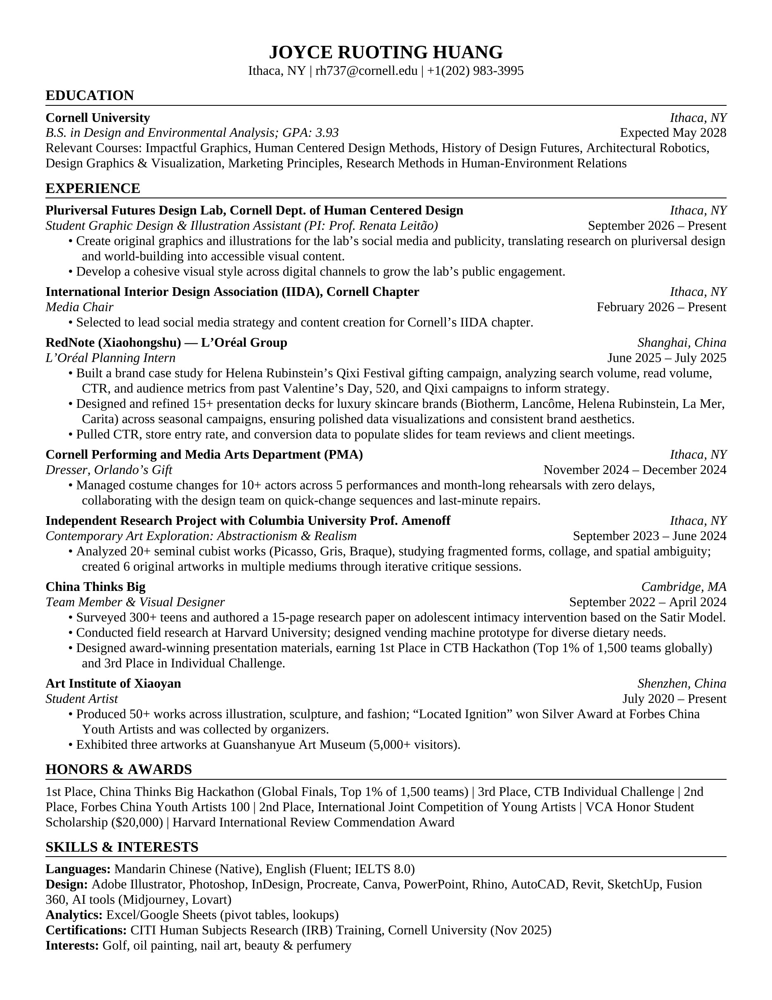

Joyce Huang
Interdisciplinary designer and artist. I like making whimsical things, thinking outside the box and turning ideas into something fun.
Portfolio under construction. New projects are on the way, and the projects you see here are still being updated too.
Trained first as a fine artist, I now design human-centered objects, spaces and brands. My anchor is how things make people feel; painting gave me an eye for color, material and emotion, and design taught me to start with people.
New here? Start with Embré for a full process case study, from research to tested prototype.
About
I’m Joyce, an interdisciplinary designer and artist who loves making whimsical things, thinking outside the box and turning ideas into something fun.
Before university I saw myself as a fine art student. Studying Design and Environmental Analysis at Cornell has challenged me to think more functionally, and to make designs and interactions that start with people.
I’m still figuring myself out as a designer and artist, which is why my projects reach into so many different areas. Lately I’ve become interested in creative direction and branding, and one day I hope to create something of my own.
Tools I use
After class
Outside of school I’m usually doing my nails, playing with makeup, or still figuring out my style. Also on the list: golf, oil painting, beauty and perfumery.
Nails
Doing my nails — designs and sets I try out.
Makeup
Playing with makeup — looks and colors I’m experimenting with.
Style
Still exploring my style with fashion — more to come.
Resume
Drag the page to turn it — all the way around

Read the resume as text
Joyce Ruoting Huang
Ithaca, NY | rh737@cornell.edu | +1(202) 983-3995
Education
Cornell UniversityIthaca, NY
B.S. in Design and Environmental Analysis; GPA: 3.93Expected May 2028
Relevant Courses: Impactful Graphics, Human Centered Design Methods, History of Design Futures, Architectural Robotics, Design Graphics & Visualization, Marketing Principles, Research Methods in Human-Environment Relations
Experience
Pluriversal Futures Design Lab, Cornell Dept. of Human Centered DesignIthaca, NY
Student Graphic Design & Illustration Assistant (PI: Prof. Renata Leitão)September 2026 – Present
- Create original graphics and illustrations for the lab’s social media and publicity, translating research on pluriversal design and world-building into accessible visual content.
- Develop a cohesive visual style across digital channels to grow the lab’s public engagement.
International Interior Design Association (IIDA), Cornell ChapterIthaca, NY
Media ChairFebruary 2026 – Present
- Selected to lead social media strategy and content creation for Cornell’s IIDA chapter.
RedNote (Xiaohongshu) — L’Oréal GroupShanghai, China
L’Oréal Planning InternJune 2025 – July 2025
- Built a brand case study for Helena Rubinstein’s Qixi Festival gifting campaign, analyzing search volume, read volume, CTR, and audience metrics from past Valentine’s Day, 520, and Qixi campaigns to inform strategy.
- Designed and refined 15+ presentation decks for luxury skincare brands (Biotherm, Lancôme, Helena Rubinstein, La Mer, Carita) across seasonal campaigns, ensuring polished data visualizations and consistent brand aesthetics.
- Pulled CTR, store entry rate, and conversion data to populate slides for team reviews and client meetings.
Cornell Performing and Media Arts Department (PMA)Ithaca, NY
Dresser, Orlando’s GiftNovember 2024 – December 2024
- Managed costume changes for 10+ actors across 5 performances and month-long rehearsals with zero delays, collaborating with the design team on quick-change sequences and last-minute repairs.
Independent Research Project with Columbia University Prof. AmenoffIthaca, NY
Contemporary Art Exploration: Abstractionism & RealismSeptember 2023 – June 2024
- Analyzed 20+ seminal cubist works (Picasso, Gris, Braque), studying fragmented forms, collage, and spatial ambiguity; created 6 original artworks in multiple mediums through iterative critique sessions.
China Thinks BigCambridge, MA
Team Member & Visual DesignerSeptember 2022 – April 2024
- Surveyed 300+ teens and authored a 15-page research paper on adolescent intimacy intervention based on the Satir Model.
- Conducted field research at Harvard University; designed vending machine prototype for diverse dietary needs.
- Designed award-winning presentation materials, earning 1st Place in CTB Hackathon (Top 1% of 1,500 teams globally) and 3rd Place in Individual Challenge.
Art Institute of XiaoyanShenzhen, China
Student ArtistJuly 2020 – Present
- Produced 50+ works across illustration, sculpture, and fashion; “Located Ignition” won Silver Award at Forbes China Youth Artists and was collected by organizers.
- Exhibited three artworks at Guanshanyue Art Museum (5,000+ visitors).
Honors & Awards
1st Place, China Thinks Big Hackathon (Global Finals, Top 1% of 1,500 teams) | 3rd Place, CTB Individual Challenge | 2nd Place, Forbes China Youth Artists 100 | 2nd Place, International Joint Competition of Young Artists | VCA Honor Student Scholarship ($20,000) | Harvard International Review Commendation Award
Skills & Interests
Languages: Mandarin Chinese (Native), English (Fluent; IELTS 8.0)
Design: Adobe Illustrator, Photoshop, InDesign, Procreate, Canva, PowerPoint, Rhino, AutoCAD, Revit, SketchUp, Fusion 360, AI tools (Midjourney, Lovart)
Analytics: Excel/Google Sheets (pivot tables, lookups)
Certifications: CITI Human Subjects Research (IRB) Training, Cornell University (Nov 2025)
Interests: Golf, oil painting, nail art, beauty & perfumery